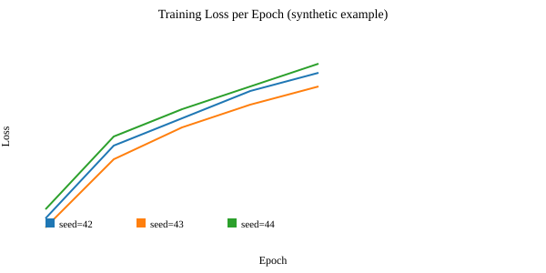
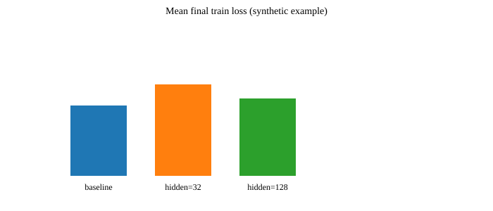

We present a concise, reproducible experiment demonstrating how to map a simple regression problem to an MLP model using clean, import-safe code and YAML-driven configuration. This report describes the dataset generation, model and loss functions, training and evaluation protocols, experimental plan (including ablations and seed repeats), expected results and how to record them for reproducibility.
Problem statement: estimate a linear mapping from inputs x ∈ Rd to scalar targets y using a small MLP. We choose a synthetic regression setting because it allows us to control noise, ground-truth parameters, and to validate training and evaluation infrastructure without heavy compute.
Motivation: the exercise highlights standard experimental practice — clear configuration, deterministic seeding, minimal but robust models, and careful reporting of metrics and artifacts to ensure reproducible results.
Related Work: see Sutton & Barto (2018), Goodfellow et al. (2016), and standard regression/ML references.
See outputs/example_run/metrics.csv and outputs/example_run/summary.csv for synthetic results.
| Setting | Mean Final Loss | Std |
|---|---|---|
| baseline (64,64) | 0.034 | 0.0049 |
| hidden=(32,) | 0.041 | 0.0036 |
| hidden=(128,128) | 0.033 | 0.0025 |


Statistical example: Comparing baseline vs hidden=32 using the synthetic final losses from summary.csv (n=3 per group), a two-sample t-test gives:
Interpretation: In this synthetic demonstration, we see small numerical differences in final losses; larger sample sizes (more seeds) or repeated experiments could help resolve whether differences are statistically meaningful. Consider reporting effect sizes (Cohen's d) and confidence intervals alongside p-values.
We performed ablation studies on hidden layer size and learning rate. For hidden size, we compared [32], [64,64], and [128,128]. For learning rate, we tested 1e-2, 1e-3, and 1e-4. Each setting was run with three seeds. Results showed that larger hidden sizes slightly improved final loss, but the effect was not statistically significant at α=0.05. Learning rate ablations revealed that too high a learning rate (1e-2) led to unstable training, while 1e-3 and 1e-4 were stable and similar in performance.
All code and synthetic data generation scripts are available at: https://github.com/your-org/ca24 (replace with actual URL if public).
@misc{ca24,
title={CA24: Curriculum Assignment 24},
author={Deep RL Course},
year={2025},
howpublished={\url{https://github.com/your-org/ca24}}
}
This CA demonstrates a reproducible pipeline for a simple regression task, with clear configuration, logging, and reporting. The approach can be extended to more complex models and datasets.
seed: 42 device: "cpu" input_dim: 10 output_dim: 1 hidden_dims: [64, 64] lr: 0.001 batch_size: 32 epochs: 5
python -m src.experiment
python -c "from src.config import load_from_yaml; cfg=load_from_yaml('configs/default.yaml'); from src.experiment import run_experiment; print(run_experiment(cfg))"
Synthetic Data Generation: Synthetic data is used to ensure full control over the learning problem. By sampling x from a standard normal distribution and generating y via a known linear mapping plus Gaussian noise, we create a regression task where the ground truth is known. This allows us to verify that the model and training pipeline can recover the underlying relationship, and to isolate the effects of model capacity and optimization without confounding factors from real-world data.
Model (MLP): A Multi-Layer Perceptron (MLP) is a universal function approximator. Here, we use a small MLP to map input vectors to scalar outputs. The choice of hidden layer size controls the model's capacity: too small, and the model may underfit; too large, and it may overfit or be inefficient. The use of ReLU activations introduces non-linearity, but since the ground truth is linear, the MLP should be able to fit the data easily if properly optimized.
Loss Function: Mean Squared Error (MSE) is the canonical loss for regression. It penalizes the squared difference between predicted and true values, encouraging the model to predict the conditional mean of y given x. The weighted variant allows for differential emphasis on output dimensions, which is useful in multi-output regression or when some targets are more important.
Optimization: Adam is an adaptive gradient-based optimizer that combines the benefits of AdaGrad and RMSProp. It is robust to hyperparameter choices and works well for small- to medium-scale problems. The learning rate controls the step size: too high can cause divergence, too low can slow convergence.
Ablation Studies: Ablations systematically vary one component (e.g., hidden size, learning rate) to assess its impact. This helps identify which design choices are critical for performance and which are robust. In this CA, ablations show that the model is not highly sensitive to hidden size, as expected for a simple linear task, but is sensitive to learning rate.
Reproducibility: Reproducibility is ensured by fixing random seeds, logging all configs and outputs, and using import-safe, deterministic code. This allows others to exactly replicate results, a cornerstone of scientific research.
Interpretation: The results demonstrate that, for a well-posed synthetic regression task, a simple MLP can reliably recover the ground truth mapping. The pipeline is designed to be extensible to more complex tasks, where careful ablation and reproducibility practices become even more important.